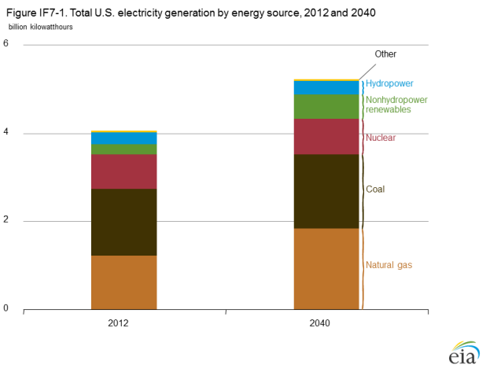
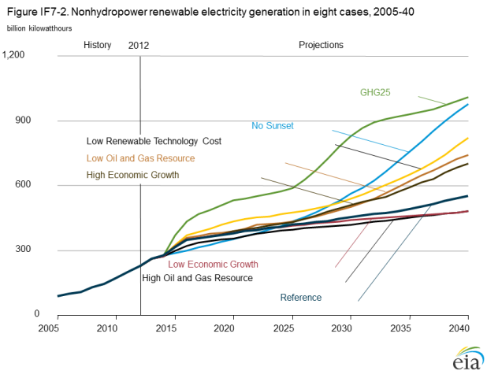
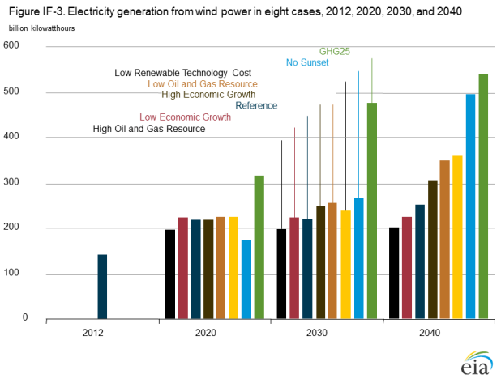
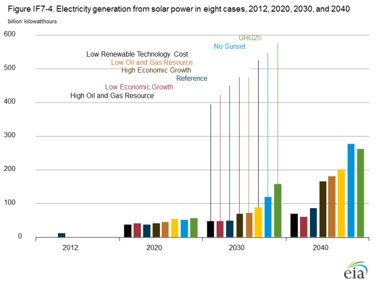
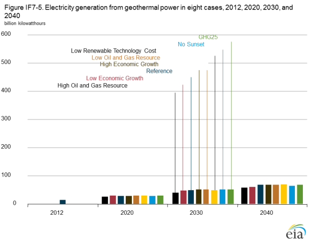
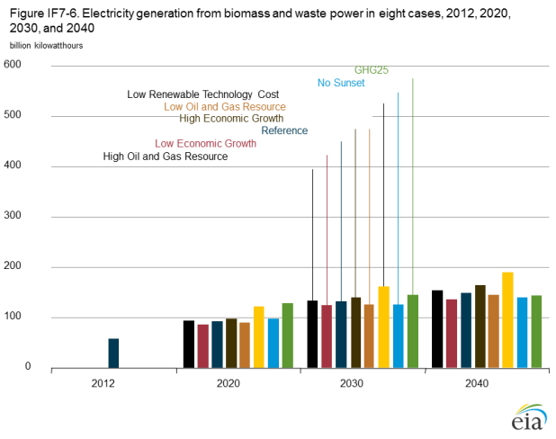

Renewable electricity projections show growth under alternative assumptions in AEO2014
Release Date: 4/29/14
In the AEO2014 Reference case, renewable electricity generation grows by 69% from 2012 to 2040, including an increase of more than 140% in generation from nonhydropower renewable energy sources. Renewables are collectively the fastest-growing source of electricity generation in the projection, with annual growth rates that exceed the growth rate for natural gas-fired generation. However, because renewables start from a relatively low 12% market share of total generation, their contribution to U.S. total electricity generation is just 16% in 2040 in the Reference case, well below the natural gas and coal shares of 35% and 32%, respectively (Figure IF7-1).
figure data
The AEO2014 Reference case is based on current laws and policies, as well as on known technology and demographic trends. Projections of nonhydropower [1] renewable electricity generation are sensitive to assumptions about government policies and external market factors. Key uncertainties affecting projected growth include expiration of policies that affect financial incentives for deployment or operation of particular technologies, the costs and performance of the technologies, the costs of competing generation sources, and macroeconomic conditions that affect growth in electricity demand (including GDP growth).
The renewable energy policy landscape is particularly dynamic compared to that of more-established energy sources, as new and existing policies continue to be created and adjusted at the federal, state, and local levels. In addition, policies that affect competing sources of generation, such as natural gas and coal, can have significant impacts on renewable generation projects. For example, placing an explicit or implicit value on carbon dioxide (CO2) emissions would make the cost of operating fossil-fueled capacity higher, improving the relative economics of renewables.
From 2005 to 2012, nonhydropower renewable generation more than doubled, encouraged by policies such as federal tax credits and grants, state renewable portfolio standards (RPS), and a variety of other state and local policies such as rebates, tax incentives, financing assistance, net metering, and interconnection standards. For example, the federal production tax credit (PTC), which most recently applied to wind, geothermal, biomass, hydro, certain waste technologies, and marine energy projects under construction by the end of 2013, was first established by the Energy Policy Act of 1992. Since that time, the tax credit has been revised periodically—expiring several times and then subsequently being renewed. Most recently, the credit expired at the end of 2013 and has not been extended as of early 2014. Trade groups and renewable supporters continue to advocate for an extension to the 2013 deadline, but the AEO2014 Reference case assumes no such extension.
Assumptions about the cost and performance of renewable technologies also affect the projections, particularly as some renewable technologies become more economically competitive in some regions. Determination of future or even current technology costs can be a challenge. For example, in the case of solar photovoltaic (PV) technologies, there is enough variation among current projects in terms of geographic locations, technologies, developer experience, and regulatory frameworks that even the most carefully developed estimates will overstate actual costs for some projects and understate costs for others. While PV capital costs have declined over the past decade, there is continuing uncertainty about both the degree and pace of future cost declines.
Projections for generation with renewables are sensitive to the prices of competing generation sources and other market factors, particularly in later years of the projection period, when the projected trends in renewable generation are increasingly influenced by economic rather than policy factors. In some regions and projection years, renewable resources like wind or solar may represent the marginal source of capacity growth, which makes renewables sensitive to price swings in competing resources as well as to broader economic or market fluctuations. In order to address such uncertainties, AEO2014 includes alternative cases to provide insight regarding the direction and magnitude of sensitivities in the projections. Table IF7-1 shows key technology, policy, economic, and market uncertainties and shows how they are addressed in a selected group of AEO2014 alternative cases (described in more detail in Appendix E).
| Key uncertainties | Selected AEO2014 alternative cases | Uncertainties not addressed in AEO2014 alternative cases |
|---|---|---|
| Technology: Cost assumptions for renewable technologies. | Low Renewable Technology Cost | Breakthroughs in new or emerging renewable
(e.g., wave/tide/ocean) or complementary (e.g., storage) technologies |
| Policy: Current policies may not expire as scheduled; future policies may impose direct or indirect fees on carbon dioxide emissions. | No Sunset GHG25 (carbon dioxide fee case) | Existing policies not explicitly modeled in AEO2014 that are more specific or geographically specialized (e.g., net metering, local rebate programs, and technologyspecific set-asides in state RPS programs); other new policies that could be introduced |
| Macroeconomics and prices: Macroeconomic growth rates and natural gas prices. | High Oil and Gas Resource Low Oil and Gas Resource High Economic Growth Low Economic Growth |
Competition from other fuels; sector- or
region-specific economic factors; unexpected shifts in demand |
| Sources of uncertainty and variation in AEO2014 projections for renewable electricity generation: U.S. Energy Information Administration. | ||
The Low Renewable Technology Cost case assumes that renewable technology capital costs are 20% lower than in the Reference case. The No Sunset case assumes the extension of existing federal energy policies that contain sunset provisions—in particular the production and investment tax credits for certain renewable electricity generation technologies. The GHG25 case assumes a policy that applies a fee on carbon dioxide emissions (in 2012 dollars) starting at $25 per metric ton in 2015 and escalating by 5% per year to about $85 per metric ton in 2040. The High Oil and Gas Resource case adjusts oil and gas resource and productivity assumptions that result in natural gas prices to the electric power sector in 2040 that are 37% lower than in the Reference case. The Low Oil and Gas Resource case adjusts assumptions about oil and gas resources that result in natural gas prices to the electric power sector in 2040 that are 33% higher than in the Reference case. The High Economic Growth and Low Economic Growth cases assume higher and lower levels of real GDP growth from 2012 to 2040 than in the Reference case.
Figure IF7-2 shows projected total nonhydropower renewable generation from 2012 to 2040 in the selected alternative cases. The results vary significantly, particularly in the later years of the projection. For example, in the GHG25 case total nonhydropower renewable generation in 2040 is 83% higher than in the Reference case, and in the High Oil and Gas Resource case total nonhydropower renewable generation in 2040 is 12% lower than in the Reference case.

figure data
Some of the assumptions used in the AEO2014 alternative cases can lead to significant increases in long-term growth of renewable electricity generation. However, alternative cases with assumptions that are less favorable to renewables growth, such as the Low Economic Growth case (with slower electricity demand growth) and the High Oil and Gas Resource case (with lower natural gas prices) are unlikely to result in renewable projections that fall drastically below those in the Reference case—in large part because state renewable portfolio standards (RPS) effectively establish a floor for generation with renewables. RPS policies generally require that a minimum share of generation must come from renewable sources, and even with slow load growth or competition from low-cost alternative generation resources, renewable generation must be sufficient to meet the RPS target. On the other hand, as renewable generation sources become increasingly competitive after 2025, a favorable shift in assumptions may result in an impact that does not have a limit on the upper bound, allowing for stronger growth in renewable generation than is projected in the Reference case.
In addition, long-term projections are more sensitive to changes in assumptions than are near-term projections. Although the range of renewable generation in 2040 across the alternative cases is large, the 2025 projections for total renewable generation are within 15% of the Reference case in all the alternative cases except for the GHG25 case. Near-term growth in renewable generation is constrained by a combination of factors that generally hold across most sensitivity analyses: growth in electricity demand continues at a relatively low annual rate (less than 1% per year in the Reference case) compared with historical levels, and generating capacity required to meet demand and reserve requirements in many regions already exceeds nearterm requirements at the start of the projection period. As a result, demand for new generating capacity of any type in the first decade of the projection is minimal in most regions. From 2012 to 2025, total generating capacity—including renewables, fossil fuels, and nuclear—increases by only 4%. However, as renewable technologies become more economically competitive, they capture a larger share of the growing market. In addition, even with low rates of electricity demand growth, the presence of a significant and growing fee on CO2 emissions creates enough pressure early in the projection period to spur significant growth of renewable generation in the near term.
Alternative assumptions that lead to greater penetration of electricity markets by renewable energy sources—namely, those in the No Sunset, Low Renewable Technology Cost, GHG25, Low Oil and Gas Resource, and High Economic Growth cases—do not have proportionate effects on all renewable technologies (Figures IF7-3 through IF7-6). Generation from solar and wind installations generally increases by more compared with the Reference case than does generation from biomass, waste, and geothermal sources. Solar generation in 2040 in most of the alternative cases is more than double the Reference case level. Wind starts from a much larger installed capacity base, so the percentage growth in wind generation is lower than for solar, but in all five alternative cases wind generation in 2040 is at least 20% higher than projected in the Reference case.

figure data

figure data

figure data

figure data
Solar and wind energy are expected to remain the primary sources of renewable capacity growth. Although geothermal, waste, and biomass resources have some favorable characteristics compared to wind and solar, such as the ability to provide operatordispatched power, each has significant limitations. The limitations include a limited resource base (geothermal, waste) or relatively high capital and/or fuel costs (biomass). Although wind and solar will continue to be capital-intensive technologies, they are expected to achieve cost reductions that—along with a larger resource base—result in higher growth than other renewables under favorable conditions (such as placement of an explicit or implicit value on CO2 emissions, or high natural gas prices). However, solar and wind resources also vary in availability and quality by region, and generation facilities are likely to be concentrated in the more favorable regions.
Even in the alternative cases that result in higher levels of market penetration for renewable generation technologies, the results are limited by the selection of technologies currently modeled by the U.S. Energy Information Administration. The AEO2014 alternative cases cannot be used to evaluate potential technologies that are not characterized in the National Energy Modeling System. Some emerging renewable technologies not included in AEO2014 include engineered geothermal systems, marine hydrokinetics (such as wave energy), in-stream hydroelectric, and hybrid solar thermal combined cycle.
Similarly, no new electricity storage technologies are included in the projections. Electricity storage represents one of several options for accommodating high levels of intermittent generation from wind and solar resources. Because such technologies, other than pumped hydro storage, generally are either in early stages of evelopment or not yet commercially established, impacts on electricity markets in the near- to mid-term period are difficult to model.
The AEO2014 alternative cases typically examine the effects of changing single assumptions within a moderate range of uncertainty, and they are not intended to be interpreted as bounding cases. For example, a compound case incorporating high natural gas prices, low renewable technology costs, and an explicit or implicit value for CO2 emissions could be expected to result in additional renewable generation growth, although the impact would not necessarily be the sum of the results of the individual cases. The same could be true if any of the individual alternative cases were examined using different assumptions—for example, if renewable technology costs were assumed to be 50%, rather than 20%, below the costs used in the Reference case.
Endnotes
- Hydropower has resource-specific characteristics that separate it from other renewable energy sources. It is projected to remain close to current capacity and generation levels in the cases considered here.
Comments
Read what others are saying …
09/10/2014 - Spain
What are the assumptions in the Reference Case for future cost of solar and wind?
05/01/2014 - California, United States
The reference case (and most of the other cases) are exceedingly dour - how can one reasonably expect that wind and solar growth rates will taper off this drastically, just as both are reaching grid parity in numerous markets? Beyond the grid parity argument, there is ongoing climate change concern, air quality concern, and most importantly, emphasis on local jobs (which renewables encompasses renewables development, installation, O&M. In the context of all these real world trends, it's a bit shocking that the author sees a reasonable path forward to such substantially curtailed growth rates for these industries.